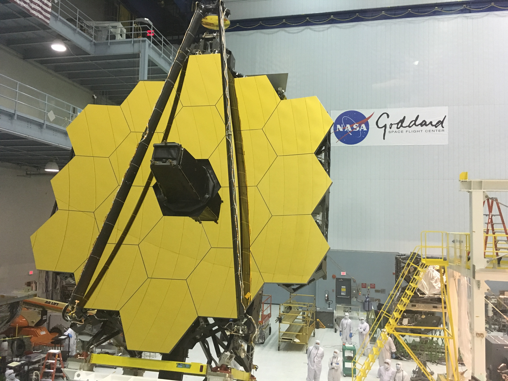
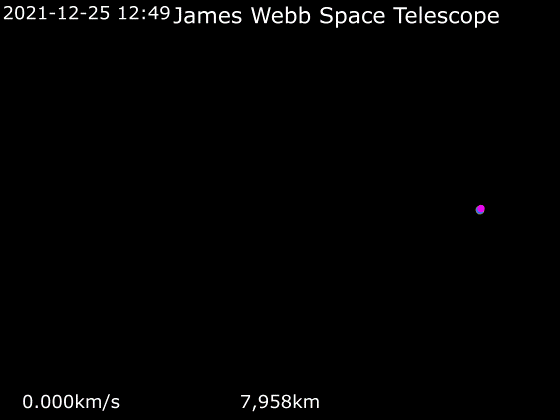
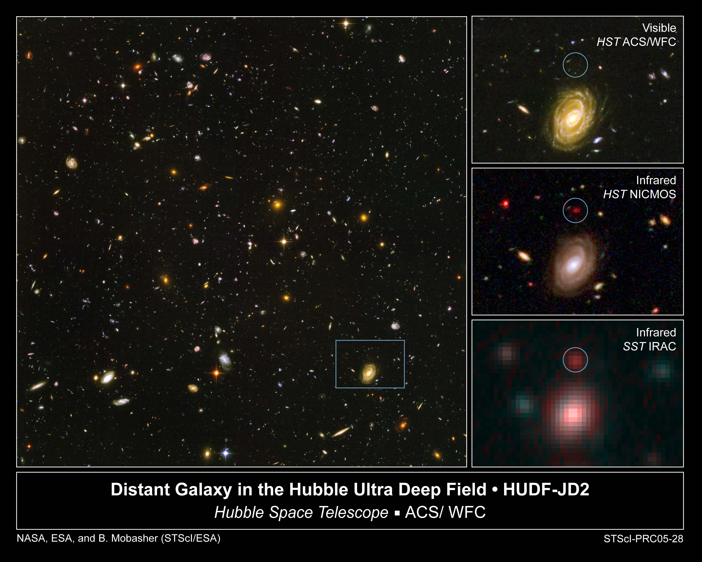

JWST

El telescopio espacial James Webb (en inglés, James Webb Space Telescope (JWST)) es un observatorio espacial desarrollado a través de la colaboración de 14 países4, construido y operado conjuntamente por la Agencia Espacial Europea, la Agencia Espacial Canadiense y la NASA para sustituir los telescopios Hubble y Spitzer. El JWST ofrece una resolución y sensibilidad sin precedentes, y permite una amplia gama de investigaciones en los campos de la astronomía y la cosmología.7 Uno de sus principales objetivos es observar algunos de los eventos y objetos más distantes del universo, como la formación de las primeras galaxias. Este tipo de objetivos están fuera del alcance de los instrumentos terrestres y espaciales actuales. Entre sus objetivos están incluidos estudiar la formación de estrellas y planetas y obtener imágenes directas de exoplanetas y novas.

Entre sus principales características técnicas hay que destacar el espejo primario de JWST, compuesto por 18 segmentos hexagonales que, combinados, crean un espejo con un diámetro de 6,5 metros, un gran aumento con diferencia sobre el espejo utilizado por el Hubble, de 2,4 metros , el parasol y cuatro instrumentos científicos. El telescopio se sitúa en el espacio cerca del punto lagrangiano Tierra-Sol L2, está protegido por un gran parasol, hecho de cinco hojas de Kapton revestido de aluminio y silicio, que mantiene al espejo y sus cuatro instrumentos científicos principales a temperaturas cercanas al cero absoluto.
JWST vs Hubble y la mision del JWST
A diferencia del Hubble, que observa en los espectros ultravioleta cercano, visible e infrarrojo cercano, el JWST observa en la luz visible de longitud de onda larga (naranja a rojo) a través del rango del infrarrojo medio (0,6 a 27 μm). Esto permite que el JWST realice una amplia gama de investigaciones a través de muchos subcampos de la astronomía,9 que observe y estudie las primeras estrellas, de la época de reionización, formación de las primeras galaxias, tome fotografías de nubes moleculares, grupos de formación estelar, objetos con alto desplazamiento hacia el rojo demasiado viejos y demasiado distantes para que pudieran ser observados por el Hubble y otros telescopios anteriores. La misión científica de JWST tiene principalmente cuatro objetivos: encontrar luz de las primeras estrellas y galaxias que se formaron en el universo después del Big Bang; estudiar la formación y evolución de las galaxias; comprender la formación de estrellas y sistemas solares; y estudiar los sistemas planetarios y los orígenes de la vida.136 Estos objetivos se pueden lograr de manera más efectiva mediante la observación en longitudes de onda infrarroja cercana que en la luz en la parte visible del espectro. Por esta razón, los instrumentos de JWST no medirán la luz visible o ultravioleta como el telescopio Hubble, porque tiene una capacidad mucho mayor para realizar astronomía infrarroja. El JWST será sensible en un rango de longitudes de onda de 0,6 (luz naranja) a 28 micrómetros (radiación infrarroja profunda a aproximadamente 100 K (−170 °C; −280 °F)). El telescopio también se utilizará para recopilar información sobre la luz de atenuación de la estrella KIC 8462852, descubierta en el año 2015, que tiene algunas propiedades anormales de la curva de luz.
Vista ecuatorial de la trayectoria del telescopio

Vista polar de la trayectoria del telescopio
Imagenes tomadas por el JWST
